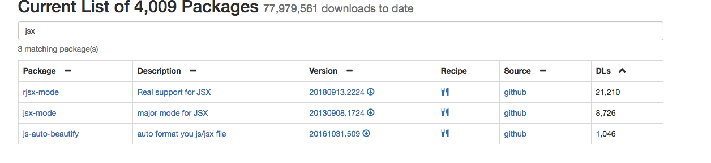

开始
配置的基础
除了前面介绍的基础之外，有以下基础知识还需要知道：
- 如何加载脚本文件
- 如何从网络下载配置
加载脚本文件
上一章大概的讲述了elisp的基本语法，这在配置脚本比较简单的时候就已经够用了。emacs启动时，会默认使用~/.emacs.d/init.el进行加载，这也就是配置的入口；只需要把配置贴到里面，emacs启动的时候就会对其进行加载。
而在实际配置中需要分文件对其进行管理。例如，python语言的配置与c语言的配置我们当然不希望混在一起。
elisp的源文件后缀名为el，编译过的字节码文件为elc。加载脚本文件的方式具体可以参见：https://github.com/slegetank/WGEECN/blob/master/5.org ; 还有wiki。其中，最常用的就是require-provide，这里也只讲这一个。
require保证文件只加载一次。即如果在不同地方require同一个功能，如果之前已经加载过，则不重复加载文件。
首先保证要加载的文件在load-path中。按下C-h v，输入load-path，看一下这个变量里都包含了哪些路径。如果要加载的文件路径不在里面，例如~/.emacs.d/init文件夹，那么就把它加进去：
(add-to-list 'load-path "~/.emacs.d/init/")
然后，在这个路径下新建一个文件init-default.el （C-x C-f），写入如下内容：
(setq hello "world") (provide 'init-default)
注意，provide放在文件的末尾，这样当整个文件加载完成时才会提供此特性，也就保证了require时，如果一个特性已经存在，那么整个文件就肯定加载完了。然后，在init.el里写入：
(require 'init-default) (message hello)
重启emacs，C-h e就会看到输出"world"。这时，如果C-h v hello，则会看到hello的值为字符串world。
从网络下载配置
以前网络不发达的时候大家很难共享配置。后来大家一般用wiki来分享自己的配置（例如dired plus，而且现在还是有一些人习惯用wiki来保存配置，实际上是在人为的抬高emacs的使用门槛）。再后来随着git以及github的兴起，emacs也终于出现了更灵活好用的配置方式。现在，将自己的配置存放到github上是一种标准方式。
而更重要的是，在emacs 24.1终于出现了从网络下载配置的pacakge包，极大的简化了配置的安装方式。一般在init.el的开头会写这么一段代码:
(when (>= emacs-major-version 24) (setq package-archives '(("gnu" . "http://elpa.emacs-china.org/gnu/") ("melpa" . "http://elpa.emacs-china.org/melpa/") ("org" . "http://orgmode.org/elpa/") ))) (package-initialize) (defun require-package (package &optional min-version no-refresh) "Install given PACKAGE, optionally requiring MIN-VERSION. If NO-REFRESH is non-nil, the available package lists will not be re-downloaded in order to locate PACKAGE." (add-to-list 'package-selected-packages package) (if (package-installed-p package min-version) t (if (or (assoc package package-archive-contents) no-refresh) (if (boundp 'package-selected-packages) ;; Record this as a package the user installed explicitly (package-install package nil) (package-install package)) (progn (package-refresh-contents) (require-package package min-version t)))))
第一段代码是将几个常用的源加入到搜索的远端列表中，其中第一个源gnu是emacs的官方源，但是要把包加入到这里面比较麻烦，要完全符合GPL还是很烦；melpa是目前最流行的一个源，绝大多数的开发者都把包贡献在这里，可以访问http://melpa.org/#/ 来查看、搜索需要的包；org是org mode单独的源，访问https://orgmode.org/elpa.html 来查看更多。
然后执行package-initialize。接下来定义了一个帮助函数require-package，它的作用是检测包是否已经在本地，如果在则忽略，不在则下载。以上三步做完之后，如果想要安装一个包，例如evil，只需要：
(require-package 'evil)
Perfect!
结构
有了上面的基础之后就是如何组织配置文件了。这里推荐以purcell的配置结构。很多高手都是拿他的配置作为基础，再根据自己的需要去修改配置，因此很具有代表性。
+-init.el +-init/ +- init-company.el +- init-python.el ...
即新建一个init文件夹，然后在其中根据功能将配置分配到不同的文件中。
一般流程
以某种语言的配置流程为例，一般是这样的：
- 寻找需要的major mode，一般emacs有自带的，但有时不好用，第三方会提供更好的选择。
- 寻找minor mode然后阅读作者提供的文档进行配置。
- 试用，然后看是否有冲突或者不好用的情况，使用advice进行行为的微调修正。
寻找包一般有两个途径：
这里以jsx的配置为例。打开melpa搜索jsx，按照下载量排序：

点击“github”，跳到github页面，阅读文档，编写配置如下：
;; 下载包 (require-package 'rjsx-mode) ;; .ts/.js/.jsx默认使用rjsx-mode (add-to-list 'auto-mode-alist '("\\.[jt]sx?$" . rjsx-mode)) ;; 加载rjsx mode的时候载入自定义配置 (add-hook 'rjsx-mode-hook (lambda () (local-set-key (kbd "<S-tab>") 'js2-mode-toggle-hide-functions)))